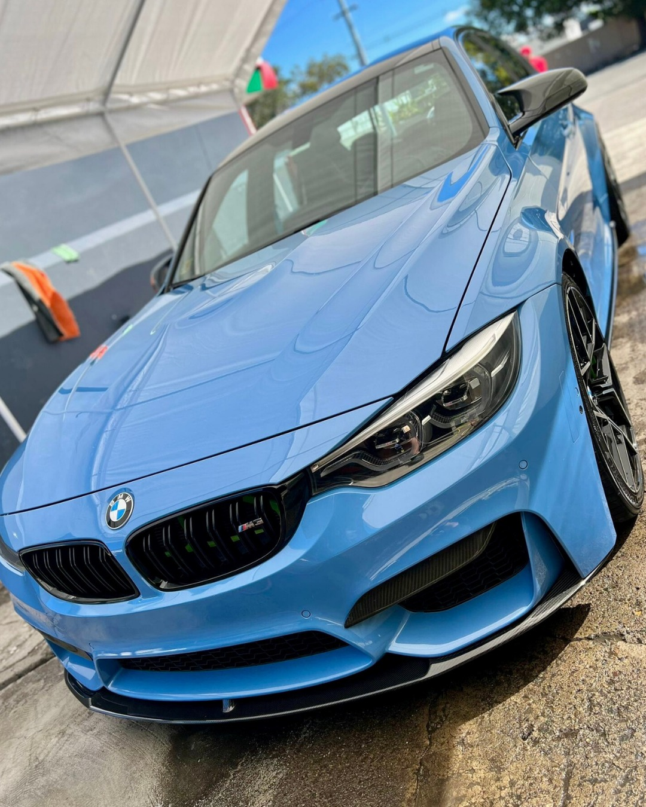
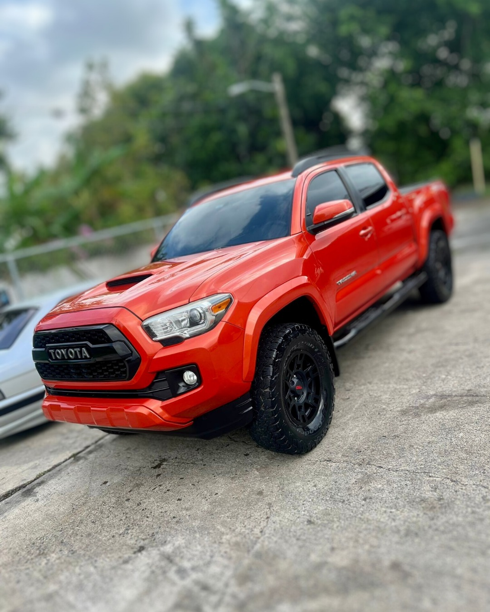
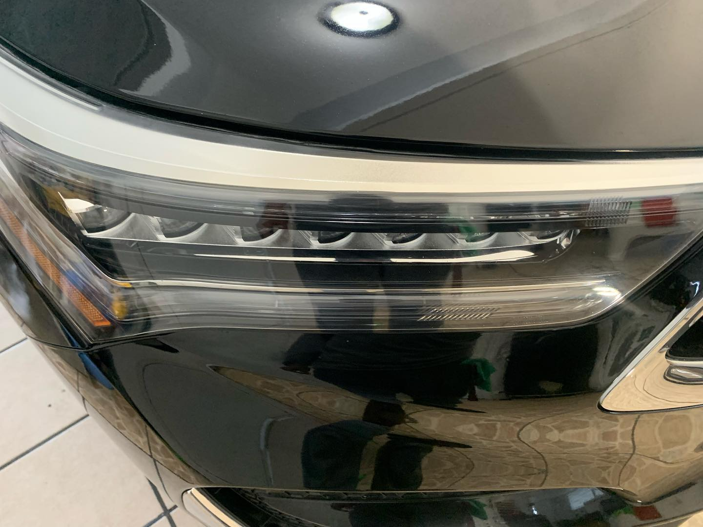
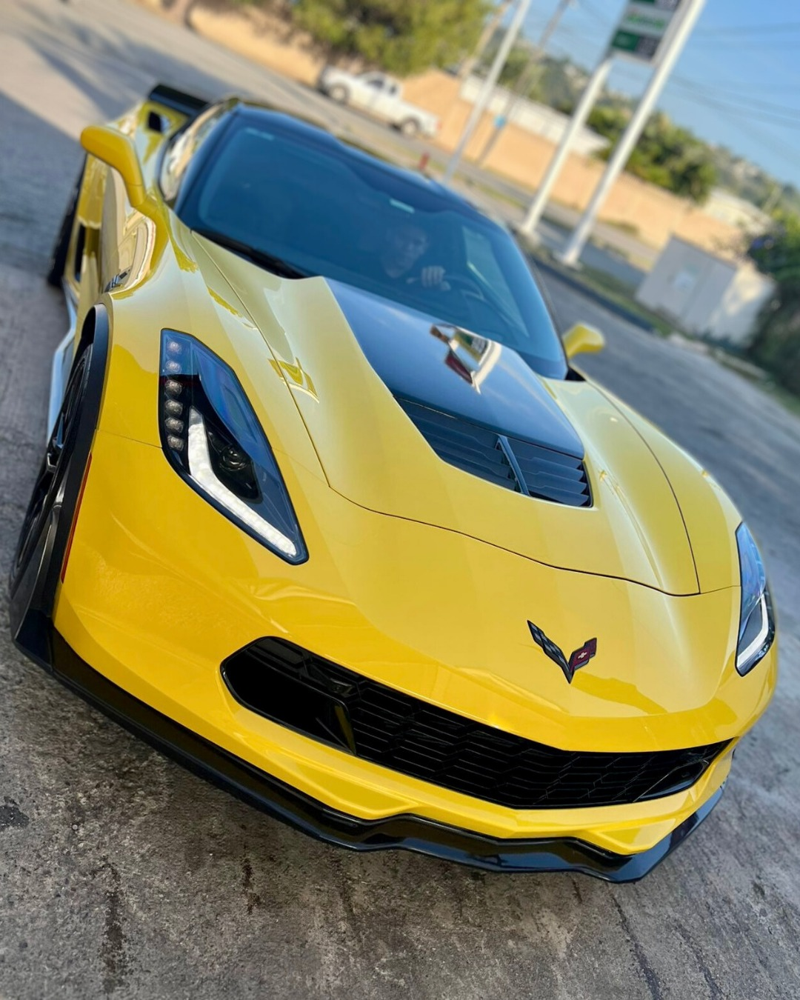
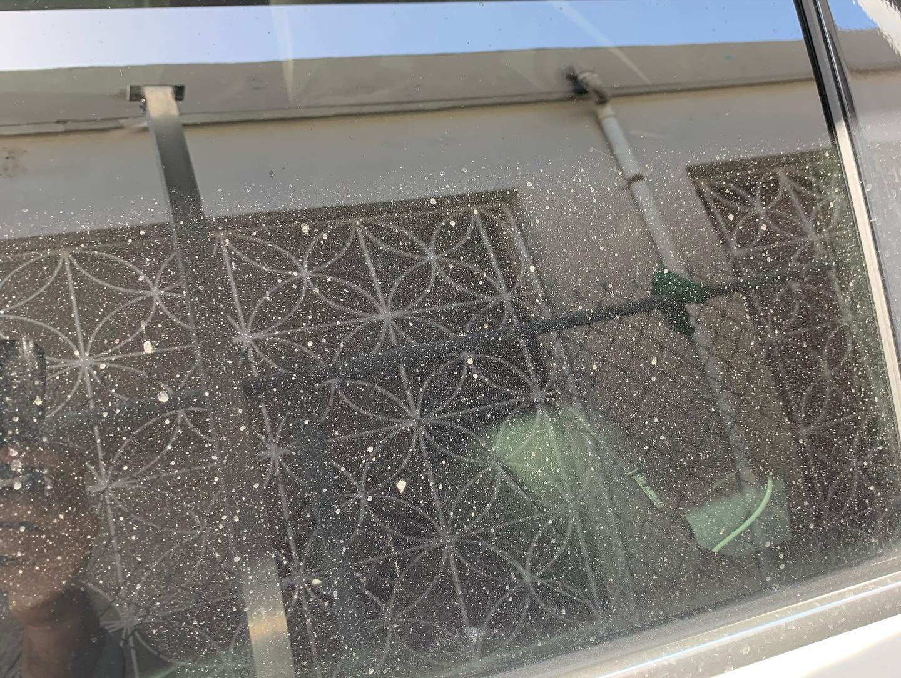

Tintes polarizados
Montura experta para autos, camiones, residencial y comercial, a domicilio. Privacidad, menos calor y un look que cambia el carro completo.

PONCE - ESTACION PUMA, GLENVIEW
Expertos en la montura de tintes polarizados para autos, camiones, residencial y comercial, y detailing completo para que tu auto luzca como nuevo.
(787) 241-1776 - Ponce, PR - Estacion Puma, Glenview
Quienes somos
En JM Detailing & Window Tint combinamos dos mundos: el tintado profesional y el detailing al detalle. Lavado basico o detallado, restauracion de focos, tratamiento ceramico, shampoo de interiores y pulido y correccion de pintura, todo en un mismo lugar en Glenview, Ponce.
Lo que hacemos
Montura experta para autos, camiones, residencial y comercial, a domicilio. Privacidad, menos calor y un look que cambia el carro completo.

De un lavado rapido a un detallado completo, con atencion a cada panel, goma y cristal.

Proteccion duradera que realza el brillo y hace mas facil mantener tu auto limpio.

Limpieza profunda de asientos, alfombras y tapiceria para un interior que huele y se siente nuevo.
Removemos marcas y devolvemos profundidad y brillo a la pintura.

Focos opacos otra vez claros, con mejor luz y mejor presencia.
Lavado a presion para superficies que necesitan fuerza de verdad.
Trabajos reales
Asi de facil
Manda tu auto y el servicio que quieres por WhatsApp.
Te confirmamos el servicio y coordinamos tu espacio.
Recoges tu auto limpio, brillante y con otro presence.
Preguntas frecuentes
Si. Los tintes polarizados se montan para autos, camiones, residencial y comercial, incluyendo servicio a domicilio.
En la Estacion Puma de Glenview, Ponce. Escribenos por WhatsApp y te confirmamos tu espacio.
Lavado completo exterior e interior con atencion al detalle, distinto al lavado basico rapido.
Si, es uno de nuestros servicios principales junto al pulido y la correccion de pintura.
Cotiza ahora
Llena el formulario y se abre WhatsApp con tu solicitud lista para enviar.
O escribenos directo: WhatsApp - (787) 241-1776